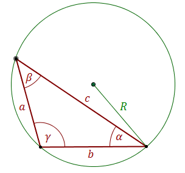

Twierdzenie sinusów działa dla dowolnego trójkąta i
dotyczy zależności między bokami i kątami.

Twierdzenie sinusów
W dowolnym trójkącie stosunek długości dowolnego boku do sinusa kąta
naprzeciw tego boku jest stały i równy długości średnicy okręgu opisanego na trójkącie.
\[\frac{a}{\sin \alpha }=\frac{b}{\sin \beta }=\frac{c}{\sin \gamma }=2R\] gdzie \(R\) - to długość
promienia okręgu opisanego na trójkącie